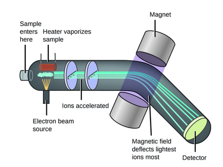
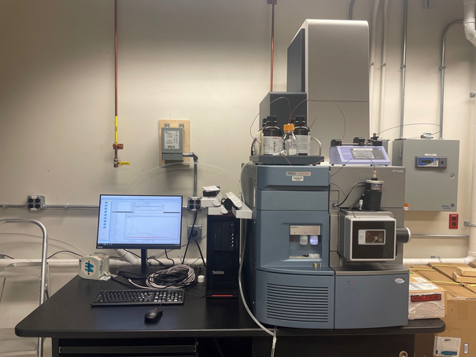

Mass spectrometer
| Vietnamese | Máy phổ khối lượng |
|---|---|
| English | Mass spectrometer |
| Pronunciation | /mæs spekˈtrɑːmɪtər/ |
| Word type | noun (as labelled in the PDFs) |
Topic 3 — Meaning (Vietnamese)
Thiết bị dùng để phân tách và phát hiện ion theo tỉ số khối lượng trên điện tích
Meaning (English)
An instrument used to separate and detect ions according to their mass-to-charge ratios. (Thiết bị dùng để phân tách và phát hiện ion theo tỉ số khối lượng trên điện tích).
Example
A mass spectrometer measures the m/z values of ions. (Máy phổ khối lượng đo các giá trị m/z của ion.)
Images from the PDFs



